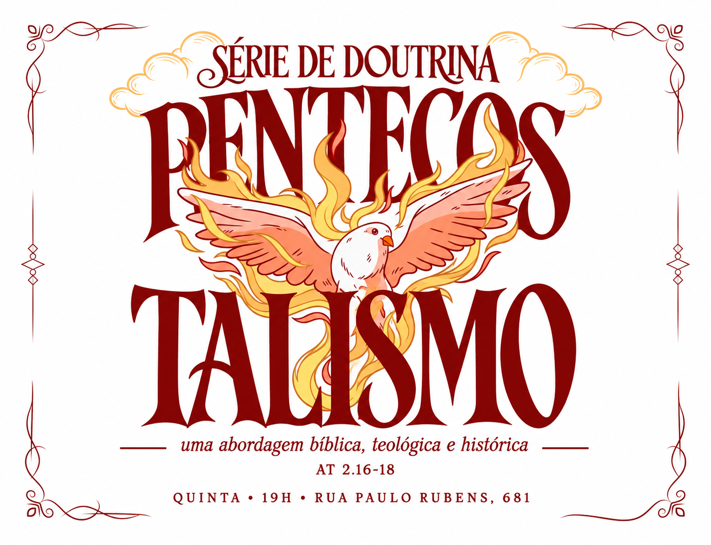

IEADTC Vila Velha III
Doutrina · "Pentecostalismo: uma abordagem bíblica, teológica e histórica" (At 2.16-18)
Quinta, 26/11 · 19:00

Mensagem que vai junto
🔥 *HOJE COMEÇA UMA SÉRIE NOVA NA DOUTRINA!* *PENTECOSTALISMO* _Uma abordagem bíblica, teológica e histórica_ Os dons acabaram com os apóstolos? Cair, tremer, gritar: é o Espírito Santo? Quem não foi batizado no Espírito Santo vai pro céu? Ao longo da série, a gente vai olhar pra essas perguntas por três caminhos: a Bíblia, a teologia e a história. Quem ministra é o *Pr. Irapuan*. > _"Pelo contrário, isto é o que foi predito pelo profeta Joel: 'Nos últimos dias, diz Deus, derramarei do meu Espírito sobre todos os povos. Os seus filhos e as suas filhas profetizarão, os jovens terão visões, os velhos terão sonhos. Sobre os meus servos e as minhas servas derramarei do meu Espírito naqueles dias, e eles profetizarão.'"_ > *Atos 2.16-18 (NVI)* 🕖 *Hoje, às 19h* 📍 *Rua Paulo Rubens, 681* _IEADTC Vila Velha III_ Traga sua Bíblia e as suas dúvidas! 🙌